Primary | Description
Identify the most important common fixed, characteristics of a property in a multiple regression model in estimating the housing prices in Ames, Iowa.
What improvements can be suggested to increase residential property values ?
Primary | Description
Secondary | Prediction
Identify the most important common fixed, characteristics of a property in a multiple regression model in estimating the housing prices in Ames, Iowa.
What improvements can be suggested to increase residential property values ?
Predict the sale price of a residential house sale in Ames, Iowa, based on common fixed, characteristics of the property.
Sales of individual residential properties in Ames, Iowa from 2006 to 2010.
By Sean De Cock (2011), Truman University
Well-known for retrospective research in Economics
Usually used for Regression - Hedonic Regression
A modern alternative to Boston Housing Dataset and California Housing Dataset
Ames Housing
2930 - 168 = 2762 observations
81 features: 23 nominal categorical, 23 ordinal categorical, 15 discrete numeric, and 20 continuous numeric.
Response: Sale_Price
| MS_Zoning | n |
|---|---|
| Floating_Village_Residential | 139 |
| Residential_High_Density | 27 |
| Residential_Low_Density | 2273 |
| Residential_Medium_Density | 462 |
| Agriculture | 2 |
| Commercial | 25 |
| Industrial | 2 |
Missingness
Response
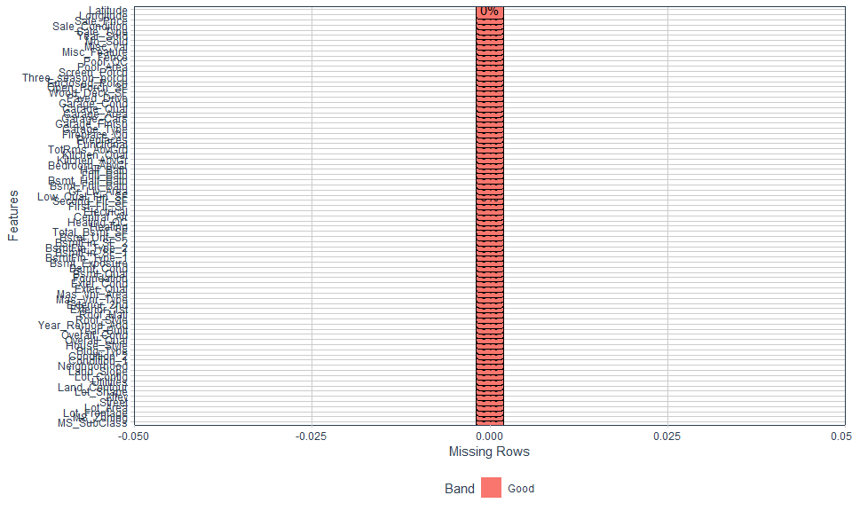
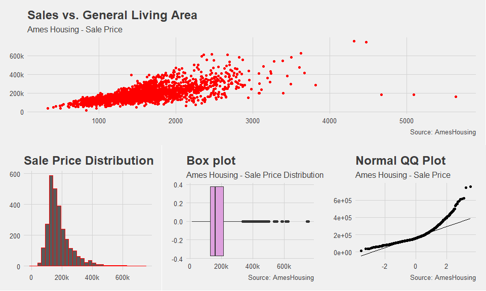
| Statistics | Values |
|---|---|
| Mean | $179,957.7 |
| Median | $159,000 |
| Standard Error | 80,219 |
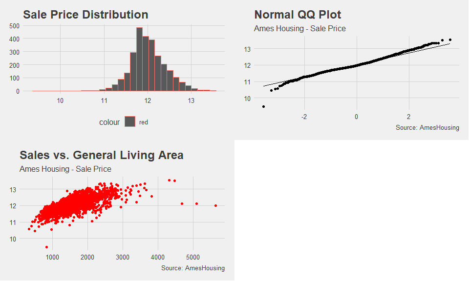
| Name | ames1 |
| Number of rows | 2762 |
| Number of columns | 81 |
| _______________________ | |
| Column type frequency: | |
| Date | 4 |
| factor | 49 |
| numeric | 28 |
| ________________________ | |
| Group variables | None |
Distribution of Numericals
Correlation Check
VIF
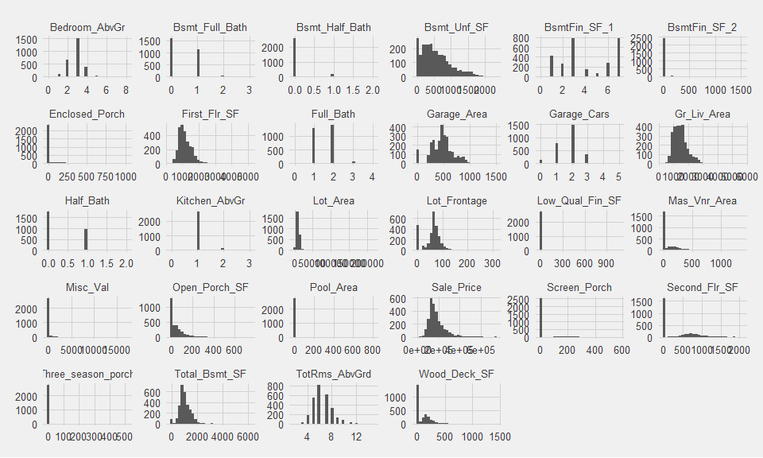
## # A tibble: 6 x 9
## # Groups: BsmtFin_SF_2, Enclosed_Porch, Low_Qual_Fin_SF, Misc_Val, Pool_Area,
## # Screen_Porch [1]
## BsmtFin_SF_2 Enclosed_Porch Low_Qual_Fin_SF Misc_Val Pool_Area Screen_Porch
## <dbl> <int> <int> <int> <int> <int>
## 1 0 0 0 0 0 0
## 2 0 0 0 0 0 0
## 3 0 0 0 0 0 0
## 4 0 0 0 0 0 0
## 5 0 0 0 0 0 0
## 6 0 0 0 0 0 0
## # ... with 3 more variables: Three_season_porch <int>, N <int>, freq <dbl>Remove 10 numeric predictors
##
## Call:
## lm(formula = Sale_Price ~ ., data = ames2 %>% select_if(is.numeric))
##
## Residuals:
## Min 1Q Median 3Q Max
## -619619 -17566 -32 16918 265685
##
## Coefficients:
## Estimate Std. Error t value Pr(>|t|)
## (Intercept) -1.008e+03 4.622e+03 -0.218 0.827314
## Lot_Frontage 9.192e+01 2.417e+01 3.804 0.000146 ***
## Lot_Area 2.129e-01 1.051e-01 2.025 0.042929 *
## Mas_Vnr_Area 5.904e+01 5.244e+00 11.259 < 2e-16 ***
## BsmtFin_SF_1 -7.674e+02 4.530e+02 -1.694 0.090369 .
## Bsmt_Unf_SF -6.104e+00 2.894e+00 -2.109 0.035022 *
## Total_Bsmt_SF 4.475e+01 3.637e+00 12.305 < 2e-16 ***
## First_Flr_SF 4.660e+01 1.728e+01 2.696 0.007052 **
## Second_Flr_SF 4.972e+01 1.715e+01 2.899 0.003778 **
## Gr_Liv_Area 1.199e+01 1.696e+01 0.707 0.479722
## Bsmt_Full_Bath 9.375e+03 1.999e+03 4.690 2.87e-06 ***
## Full_Bath 1.688e+04 1.985e+03 8.503 < 2e-16 ***
## Half_Bath 1.005e+04 2.050e+03 4.904 9.95e-07 ***
## Bedroom_AbvGr -1.507e+04 1.334e+03 -11.302 < 2e-16 ***
## TotRms_AbvGrd 7.511e+02 9.938e+02 0.756 0.449853
## Garage_Cars 1.913e+04 2.379e+03 8.042 1.30e-15 ***
## Garage_Area 1.250e+01 8.450e+00 1.479 0.139299
## Wood_Deck_SF 3.329e+01 6.486e+00 5.133 3.05e-07 ***
## ---
## Signif. codes: 0 '***' 0.001 '**' 0.01 '*' 0.05 '.' 0.1 ' ' 1
##
## Residual standard error: 40650 on 2744 degrees of freedom
## Multiple R-squared: 0.7448, Adjusted R-squared: 0.7432
## F-statistic: 471 on 17 and 2744 DF, p-value: < 2.2e-16## Lot_Frontage Lot_Area Mas_Vnr_Area BsmtFin_SF_1 Bsmt_Unf_SF
## 1.10 1.17 1.41 1.72 2.68
## Total_Bsmt_SF First_Flr_SF Second_Flr_SF Gr_Liv_Area Bsmt_Full_Bath
## 4.34 77.18 89.92 125.76 1.85
## Full_Bath Half_Bath Bedroom_AbvGr TotRms_AbvGrd Garage_Cars
## 2.02 1.76 2.06 4.08 5.55
## Garage_Area Wood_Deck_SF
## 5.52 1.15| Name | ames3 |
| Number of rows | 2762 |
| Number of columns | 69 |
| _______________________ | |
| Column type frequency: | |
| Date | 4 |
| factor | 55 |
| numeric | 10 |
| ________________________ | |
| Group variables | None |
Removable Categorical Variables
Distribution of Categorical Variables
Feature Engineering & Dummification
| Variable Name | Description | Reason for Removal |
|---|---|---|
Longitude |
Geographic coordinate - Longitude | Have 2776 levels. May not be of interests for the buyer or the seller. Affect computation time. Not appropriate for linear approach. |
Latitude |
Geographic coordinate - Latitude | Have 2762 levels. May not be of interests for the buyer or the seller. Affect computation time. Not appropriate for linear approach. |
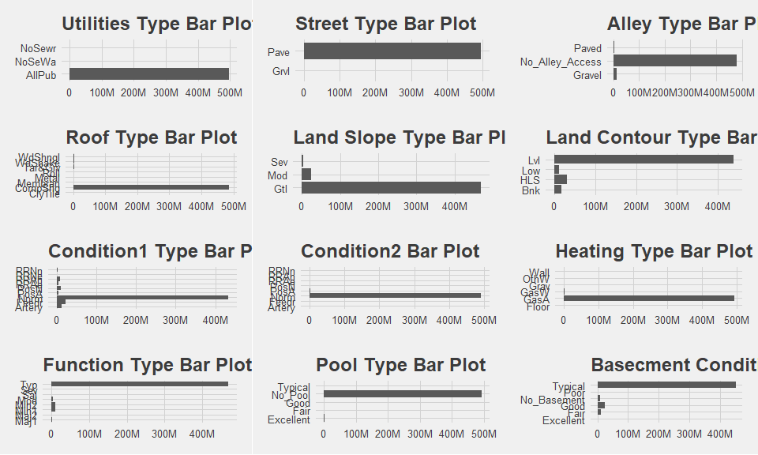
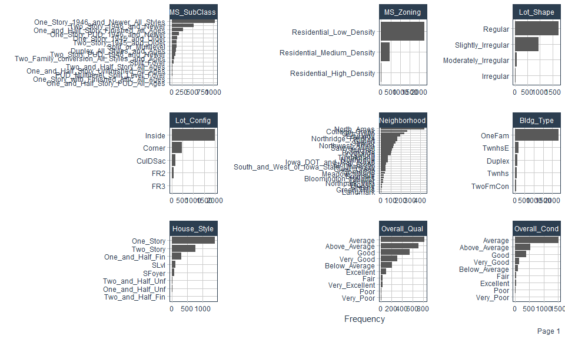
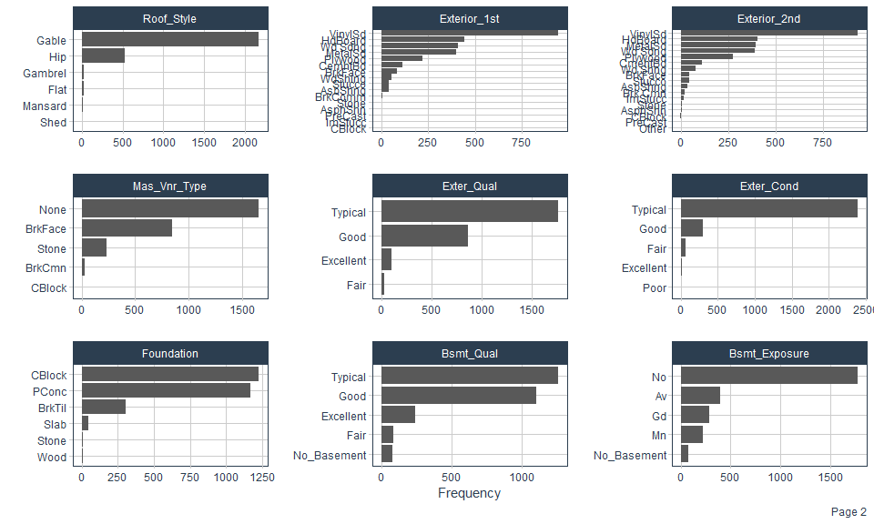
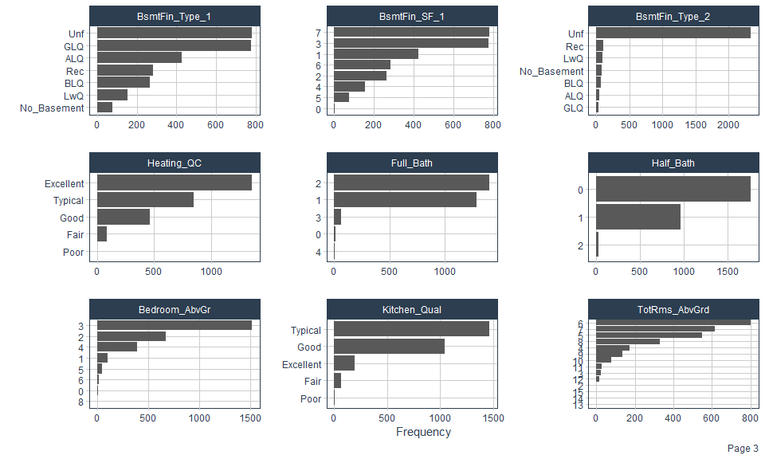
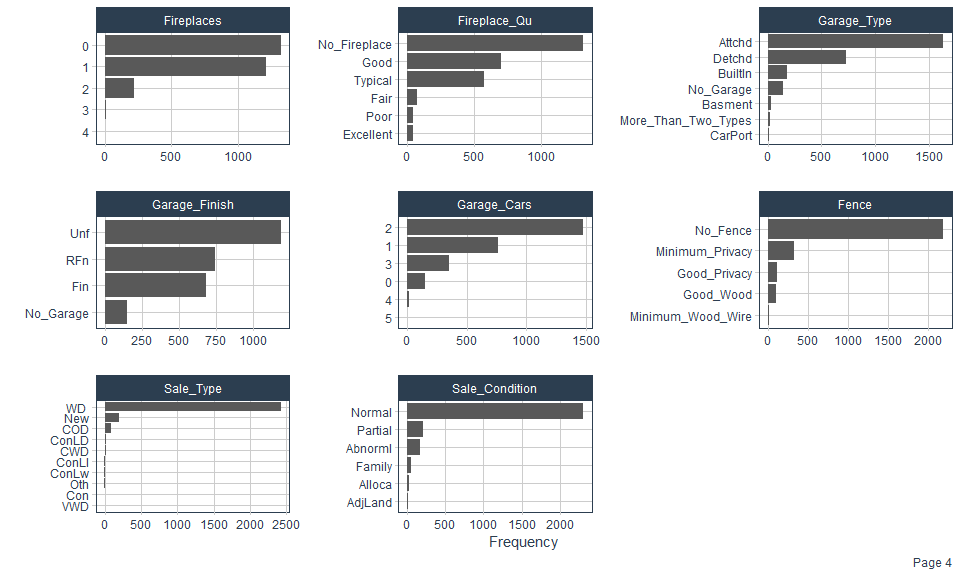
## NULLTotal_Area
Price_Total_Per_Ft
Price_Liv_Per_Ft
Remodeled
for(level in unique(ames6$MS_Zoning)){
ames6[paste("MS_Zoning", level, sep = "_")] <- ifelse(ames6$MS_Zoning == level, 1, 0)
}
for(level in unique(ames6$Lot_Shape)){
ames6[paste("Lot_Shape", level, sep = "_")] <- ifelse(ames6$Lot_Shape == level, 1, 0)
}
for(level in unique(ames6$Lot_Config)){
ames6[paste("Lot_Config", level, sep = "_")] <- ifelse(ames6$Lot_Config == level, 1, 0)
}
for(level in unique(ames6$Neighborhood)){
ames6[paste("Neighborhood", level, sep = "_")] <- ifelse(ames6$Neighborhood == level, 1, 0)
}
for(level in unique(ames6$Sale_Type)){
ames6[paste("Sale_Type", level, sep = "_")] <- ifelse(ames6$Sale_Type == level, 1, 0)
}
for(level in unique(ames6$Sale_Condition)){
ames6[paste("Sale_Condition", level, sep = "_")] <- ifelse(ames6$Sale_Condition == level, 1, 0)}| Name | ames7 |
| Number of rows | 2762 |
| Number of columns | 259 |
| _______________________ | |
| Column type frequency: | |
| Date | 4 |
| numeric | 255 |
| ________________________ | |
| Group variables | None |
AIC & BIC
Lasso Regression
n <- nrow(ames7)
null_mod <- lm(Sale_Price ~ 1, data = ames7)
full_mod <- lm(Sale_Price ~., data = ames7)
## forward selection
foward_aic <- step(null_mod, scope=list(lower=null_mod, upper=full_mod), direction="forward", trace=0);
foward_bic <- step(null_mod, scope=list(lower=null_mod, upper=full_mod), direction="forward", k=log(n),trace=0);
anova(foward_bic, foward_aic) # prefer aic
## backward
back_aic_log <- step(full_mod_log, direction="backward",trace=0);
back_bic_log <- step(full_mod_log, direction="backward", k=log(n),trace=0);
anova(back_bic_log,back_aic_log) #prefer aic
## stepwise
step_aic_log <- step(null_mod_log, scope = list(lower = null_mod_log, upper=full_mod_log), trace = 0);
step_bic_log <- step(null_mod_log, scope = list(lower = null_mod_log, upper=full_mod_log),k=log(n),trace=0)
anova(step_bic_log,step_aic_log) #prefer aic
## foward vs.
anova(foward_aic_log,back_aic_log) #prefer foward
anova(foward_aic_log, step_aic_log) #same
## backward vs.
anova(step_aic_log,back_aic_log) #prefer step
anova(step_aic_log,back_aic_log) #prefer step Foward

Backward

Stepwise

Foward vs.
Backward

Stepwise

Backward vs. Stepwise

Sale_Price ~ 38 Predictors

## [1] "Sale_Price = 5.357425e+00 - 1.542653e-01 * Overall_QualPoor - 8.303535e-02 * Overall_QualFair - 5.325827e-02 * Overall_QualBelow_Average - 4.414605e-02 * Overall_QualAverage - 3.765948e-02 * Overall_QualAbove_Average - 3.737969e-02 * Overall_QualGood - 4.298338e-02 * Overall_QualVery_Good - 5.887134e-02 * Overall_QualExcellent - 1.243696e-01 * Overall_QualVery_Excellent + 2.041875e-04 * `Total_Area <- Gr_Liv_Area + Total_Bsmt_SF` + 2.006271e-03 * `Price_Total_Per_Ft <- Sale_Price/Total_Area` + 3.051495e-01 * TotRms_AbvGrd3 + 3.576872e-01 * TotRms_AbvGrd4 + 3.720919e-01 * TotRms_AbvGrd5 + 3.868707e-01 * TotRms_AbvGrd6 + 3.902072e-01 * TotRms_AbvGrd7 + 3.857835e-01 * TotRms_AbvGrd8 + 3.798892e-01 * TotRms_AbvGrd9 + 3.662355e-01 * TotRms_AbvGrd10 + 3.355339e-01 * TotRms_AbvGrd11 + 2.996706e-01 * TotRms_AbvGrd12 + 3.399953e-01 * TotRms_AbvGrd13 + 2.651424e-01 * TotRms_AbvGrd14 - 6.390640e-02 * TotRms_AbvGrd15 - 1.951571e-03 * NeighborhoodCollege_Creek - 6.138002e-03 * NeighborhoodOld_Town - 7.574003e-03 * NeighborhoodEdwards + 3.778424e-03 * NeighborhoodSomerset + 7.732549e-03 * NeighborhoodNorthridge_Heights - 8.296554e-03 * NeighborhoodGilbert - 3.841953e-03 * NeighborhoodSawyer + 1.025858e-03 * NeighborhoodNorthwest_Ames + 7.921769e-04 * NeighborhoodSawyer_West - 9.521560e-04 * NeighborhoodMitchell + 8.074061e-04 * NeighborhoodBrookside + 9.693268e-03 * NeighborhoodCrawford - 2.372111e-03 * NeighborhoodIowa_DOT_and_Rail_Road + 3.741923e-03 * NeighborhoodTimberland - 4.333319e-03 * NeighborhoodNorthridge + 9.861994e-03 * NeighborhoodStone_Brook + 3.471727e-04 * NeighborhoodSouth_and_West_of_Iowa_State_University + 9.880597e-03 * NeighborhoodClear_Creek - 1.079138e-02 * NeighborhoodMeadow_Village - 9.173634e-03 * NeighborhoodBriardale - 6.812852e-03 * NeighborhoodBloomington_Heights - 2.679541e-03 * NeighborhoodVeenker - 3.596823e-03 * NeighborhoodNorthpark_Villa - 4.388909e-03 * NeighborhoodBlueste + 2.293765e-02 * NeighborhoodGreens - 5.091720e-02 * NeighborhoodGreen_Hills + 1.570129e-02 * NeighborhoodLandmark + 8.277407e-03 * Overall_CondPoor + 8.274194e-02 * Overall_CondFair + 9.599506e-02 * Overall_CondBelow_Average + 1.019601e-01 * Overall_CondAverage + 1.024043e-01 * Overall_CondAbove_Average + 1.019943e-01 * Overall_CondGood + 9.731158e-02 * Overall_CondVery_Good + 1.035301e-01 * Overall_CondExcellent + 2.291772e-03 * `Price_Liv_Per_Ft <- Sale_Price/Gr_Liv_Area` - 1.712885e-04 * Total_Bsmt_SF - 2.290313e-02 * MS_SubClassOne_Story_1945_and_Older - 3.461300e-03 * MS_SubClassOne_Story_with_Finished_Attic_All_Ages - 1.637770e-02 * MS_SubClassOne_and_Half_Story_Unfinished_All_Ages + 3.606421e-03 * MS_SubClassOne_and_Half_Story_Finished_All_Ages - 1.032169e-03 * MS_SubClassTwo_Story_1946_and_Newer + 4.721744e-03 * MS_SubClassTwo_Story_1945_and_Older - 3.892713e-03 * MS_SubClassTwo_and_Half_Story_All_Ages - 6.437103e-03 * MS_SubClassSplit_or_Multilevel - 1.537355e-02 * MS_SubClassSplit_Foyer + 4.702124e-03 * MS_SubClassDuplex_All_Styles_and_Ages - 5.194079e-03 * MS_SubClassOne_Story_PUD_1946_and_Newer - 2.201305e-02 * MS_SubClassOne_and_Half_Story_PUD_All_Ages - 1.708131e-02 * MS_SubClassTwo_Story_PUD_1946_and_Newer - 1.125243e-02 * MS_SubClassPUD_Multilevel_Split_Level_Foyer - 2.446752e-03 * MS_SubClassTwo_Family_conversion_All_Styles_and_Ages + 8.319426e-03 * Fireplaces1 + 1.261417e-02 * Fireplaces2 - 2.522521e-02 * Fireplaces3 + 1.707942e-02 * Fireplaces4 + 1.691145e-02 * Sale_ConditionAdjLand + 1.526134e-02 * Sale_ConditionAlloca + 2.617122e-03 * Sale_ConditionFamily + 1.077375e-02 * Sale_ConditionNormal + 3.246533e-03 * Sale_ConditionPartial + 2.627467e-03 * Garage_Cars1 + 1.345160e-02 * Garage_Cars2 + 2.060571e-02 * Garage_Cars3 + 3.760042e-02 * Garage_Cars4 + 6.935194e-02 * Garage_Cars5 - 1.728446e-03 * Lot_ShapeSlightly_Irregular + 2.402835e-03 * Lot_ShapeModerately_Irregular - 3.944120e-02 * Lot_ShapeIrregular - 1.745491e-02 * Full_Bath1 - 6.603370e-03 * Full_Bath2 - 1.491187e-02 * Full_Bath3 - 7.786809e-02 * Full_Bath4 - 1.935929e-02 * Exter_CondFair - 1.328098e-02 * Exter_CondGood + 1.054499e-01 * Exter_CondPoor - 1.086604e-02 * Exter_CondTypical - 2.012153e-03 * Garage_TypeBasment + 2.995151e-03 * Garage_TypeBuiltIn - 2.528239e-02 * Garage_TypeCarPort - 5.893859e-03 * Garage_TypeDetchd + 4.601428e-03 * Garage_TypeMore_Than_Two_Types - 2.268368e-02 * Garage_TypeNo_Garage + 7.684716e-03 * Half_Bath1 + 2.107601e-03 * Half_Bath2 + 1.696987e-05 * Bsmt_Unf_SF + 5.859949e-03 * Bsmt_Full_Bath + 3.556255e-03 * BsmtFin_Type_1BLQ - 1.566128e-03 * BsmtFin_Type_1GLQ - 1.771422e-03 * BsmtFin_Type_1LwQ - 3.084886e-02 * BsmtFin_Type_1No_Basement + 3.004582e-03 * BsmtFin_Type_1Rec - 7.640155e-03 * BsmtFin_Type_1Unf - 1.806055e-05 * Mas_Vnr_Area - 5.597083e-05 * Lot_Frontage - 8.389155e-03 * Heating_QCFair - 1.423273e-03 * Heating_QCGood - 2.720503e-02 * Heating_QCPoor - 3.811721e-03 * Heating_QCTypical - 2.000258e-05 * Garage_Area + 4.313618e-03 * FoundationCBlock + 5.088997e-03 * FoundationPConc + 1.895812e-02 * FoundationSlab - 1.070385e-02 * FoundationStone + 1.554972e-02 * FoundationWood + 6.647858e-03 * Garage_FinishNo_Garage + 3.475950e-03 * Garage_FinishRFn - 1.442594e-04 * Garage_FinishUnf + 7.764194e-05 * Year_Remod_Add - 7.361655e-04 * Year_Sold - 8.040236e-03 * FenceGood_Wood - 5.196930e-03 * FenceMinimum_Privacy - 9.443906e-03 * FenceMinimum_Wood_Wire - 2.418019e-03 * FenceNo_Fence + 5.318256e-03 * Mas_Vnr_TypeBrkFace - 4.736997e-02 * Mas_Vnr_TypeCBlock + 2.053121e-03 * Mas_Vnr_TypeNone + 2.782451e-03 * Mas_Vnr_TypeStone - 5.861174e-03 * BsmtFin_Type_2BLQ - 3.571392e-03 * BsmtFin_Type_2GLQ + 4.562926e-04 * BsmtFin_Type_2LwQ - 2.890592e-02 * BsmtFin_Type_2No_Basement + 1.967866e-03 * BsmtFin_Type_2Rec - 5.179115e-03 * BsmtFin_Type_2Unf"Diagnostic Plots
Outliers
Normality
Linearity and equal variance
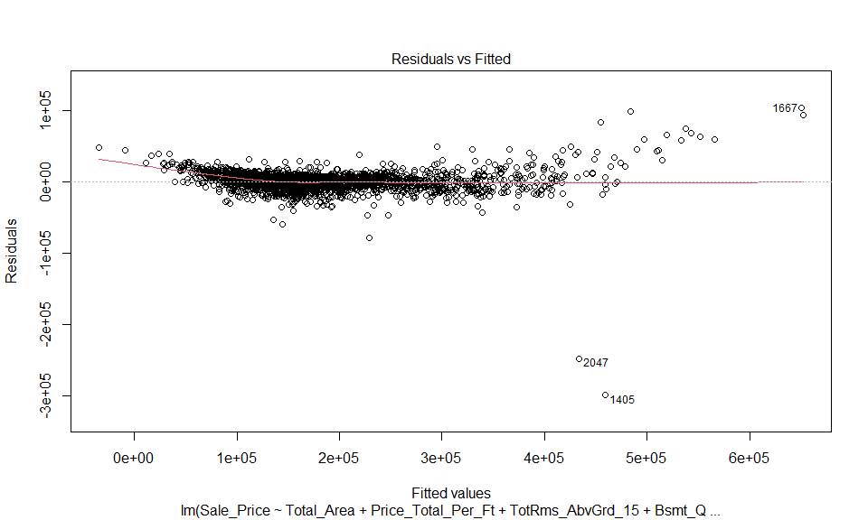
## Warning: not plotting observations with leverage one:
## 687, 706, 866, 1263, 1768, 2046, 2060, 2161, 2350, 2569, 2627
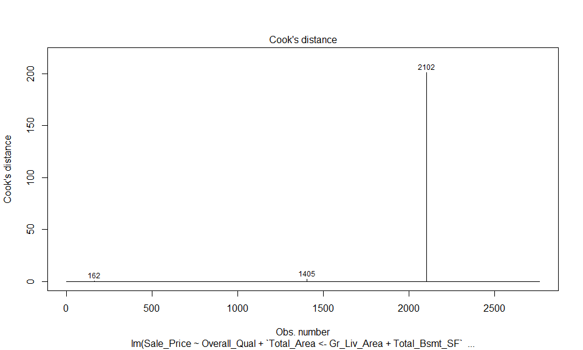
162th
1405th
2047th
## 1228
## 1228## named integer(0)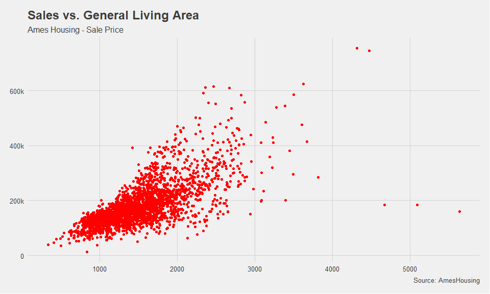
## [1] 1405 1660 1667 2046 2047p=38
n=nrow(ames6)
plot(hatvalues(fit), rstandard(fit),
xlab='Leverage', ylab='Standardized Residuals')
abline(v = 5*(p+1)/n , lty = 2, lwd = 2, col = "red")
abline(h = c(-5, 5), lty = 2, lwd = 2, col = "blue")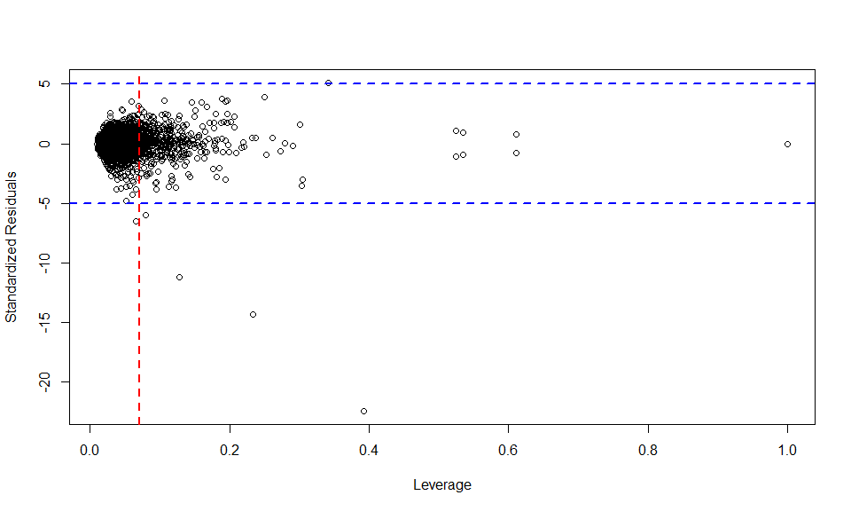
## bcPower Transformations to Multinormality
## Est Power Rounded Pwr Wald Lwr Bnd Wald Upr Bnd
## Y1 0.1292 0.13 0.0957 0.1627
## Y2 0.0176 0.00 -0.0699 0.1052
## Y3 0.8069 0.81 0.7748 0.8390
##
## Likelihood ratio test that transformation parameters are equal to 0
## (all log transformations)
## LRT df pval
## LR test, lambda = (0 0 0) 5265.732 3 < 2.22e-16
##
## Likelihood ratio test that no transformations are needed
## LRT df pval
## LR test, lambda = (1 1 1) 4067.428 3 < 2.22e-1670/30
A hedonic price analysis has been applied to smartphones using the least absolute shrinkage and selector operator (LASSO) to identify the functional features that are the best predictors of a smartphone’s price